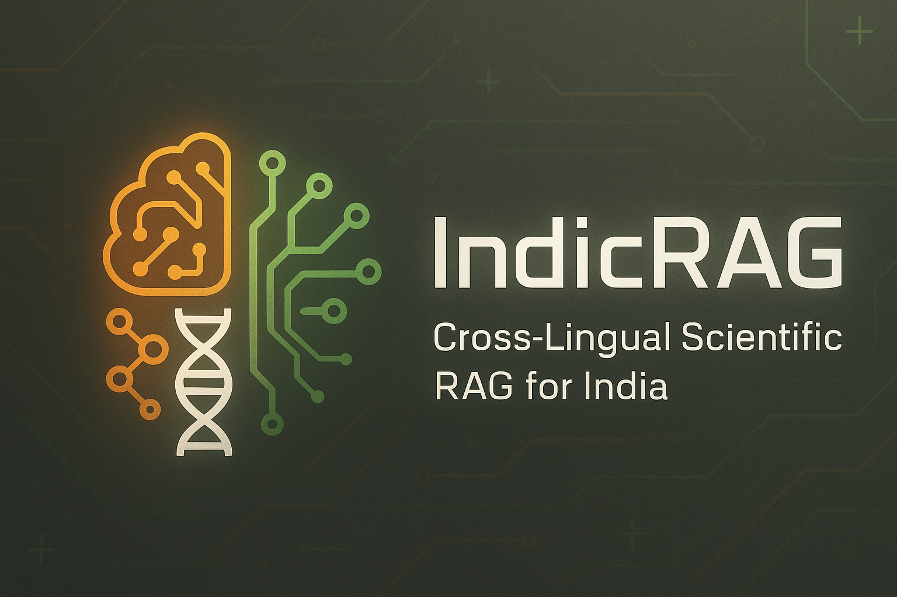

Introduction
In a country as linguistically diverse as India, with over 22 officially recognized languages and hundreds of dialects, building AI systems that can understand and process multilingual content is not just a technical challenge—it's a necessity. IndicRAG is a production-ready Retrieval-Augmented Generation (RAG) system designed specifically for Indian languages.
This project emerged from a simple observation: while RAG systems have revolutionized document-based question answering in English, most existing solutions fall short when dealing with Indic languages. IndicRAG addresses this gap by combining state-of-the-art multilingual embeddings, cross-encoder reranking, and OCR capabilities into a single, scalable pipeline.
The Challenge: Why Multilingual RAG is Hard
Building NLP systems that work across India's linguistic diversity is challenging. Traditional English-centric RAG systems face several obstacles:
- Script Diversity: Devanagari, Dravidian, and Perso-Arabic scripts require specialized processing and tokenization.
- Limited Training Data: Most open-source embedding models are English-centric and weak in cross-lingual alignment.
- Code-Mixing: Users often switch between languages mid-sentence, such as mixing English and Hindi.
- OCR Quality: Scanned administrative and legal documents often have varied quality and complex layouts.
- Semantic Nuances: Direct translation often fails to capture semantic meaning, requiring language-aware embeddings.
The IndicRAG Architecture
To solve these challenges, IndicRAG utilizes a multi-stage retrieval architecture that balances speed with semantic nuance. The system consists of several integrated components:
1. Document Ingestion & OCR
Many Indian language documents are scanned images. IndicRAG integrates a dual-stage OCR engine:
- LayoutParser: Deep learning-based layout detection to identify complex structures like tables and headers.
- Tesseract: Lightweight OCR engine supporting 100+ languages, including all major Indian scripts.
- Semantic Chunking: Preserves paragraph boundaries with overlapping context windows instead of naive fixed-size chunking.
from pytesseract import image_to_string
from layoutparser import Detectron2LayoutModel
def extract_text_from_image(image_path, lang='hin+eng'):
# Load and detect layout
model = Detectron2LayoutModel('lp://PubLayNet/mask_rcnn_X_101_32x8d_FPN_3x')
layout = model.detect(image)
# Extract text regions in reading order
text_blocks = []
for block in layout:
if block.type == 'Text':
region = image[block.coordinates]
text = image_to_string(region, lang=lang)
text_blocks.append(text)
return '\n\n'.join(text_blocks)2. Stage 1: Dense Retrieval with LaBSE
IndicRAG utilizes LaBSE (Language-agnostic BERT Sentence Embeddings). Unlike standard mBERT, LaBSE is specifically trained on parallel corpora across 109 languages, ensuring that a query in Telugu can effectively retrieve relevant context even if the source document is in English or Hindi.
from sentence_transformers import SentenceTransformer
# Load multilingual embedding model
embedder = SentenceTransformer('AI4Bharat/indic-bert-v1-mlm-only')
def create_embeddings(chunks, lang='hindi'):
# Generate embeddings with language tags
tagged_texts = [f"[{lang}] {chunk}" for chunk in chunks]
embeddings = embedder.encode(
tagged_texts,
normalize_embeddings=True # For cosine similarity
)
return embeddings3. Stage 2: Cross-Encoder Reranking
Initial retrieval using dense embeddings can miss nuanced matches. We use a cross-encoder reranker to process the top candidates, identifying the most contextual matches before final generation.
from sentence_transformers import CrossEncoder
reranker = CrossEncoder('cross-encoder/ms-marco-MiniLM-L-6-v2')
def rerank_results(query, retrieved_chunks, top_k=3):
# Prepare query-chunk pairs
pairs = [[query, chunk['chunk']] for chunk in retrieved_chunks]
scores = reranker.predict(pairs)
# Sort by score and return top-k
ranked_indices = np.argsort(scores)[::-1][:top_k]
return [retrieved_chunks[idx] for idx in ranked_indices]4. Contextual Generation with mT5
For the generation phase, the system leverages mT5 (Multilingual T5). Pre-trained on the mC4 corpus across 101 languages, mT5 is exceptionally robust at generating natural-sounding responses in languages like Marathi, Tamil, and Hindi.
Performance & Optimization
IndicRAG is optimized for production environments, focusing on both accuracy and latency:
- INT8 Quantization: Reduced model size from 2.4GB to 600MB, resulting in 2.3x faster inference on CPU.
- FastAPI Service: Asynchronous API with Redis caching and Prometheus monitoring.
- FAISS Optimization: GPU-accelerated search enables sub-200ms retrieval times.
Key Takeaways
Building production-grade multilingual NLP systems requires balancing model performance, inference speed, and engineering complexity. By combining script-aware OCR, cross-lingual embeddings, and quantized transformer models, IndicRAG bridges the digital divide for millions of non-English speakers.
👉 github.com/DNSdecoded/IndicRAG
Interested in the intersection of multilingual NLP and production ML systems? Let's connect!
← Back to Blog